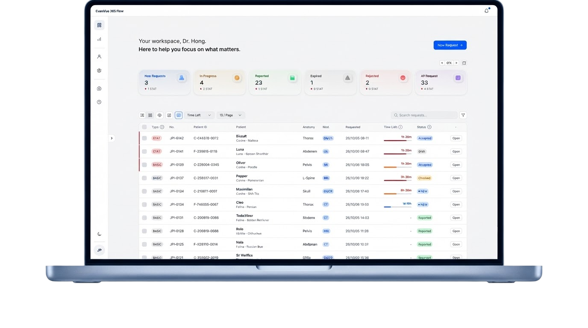
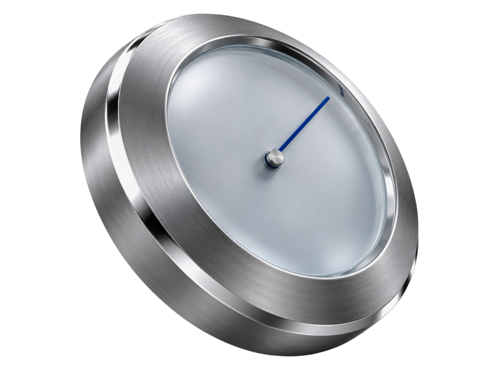
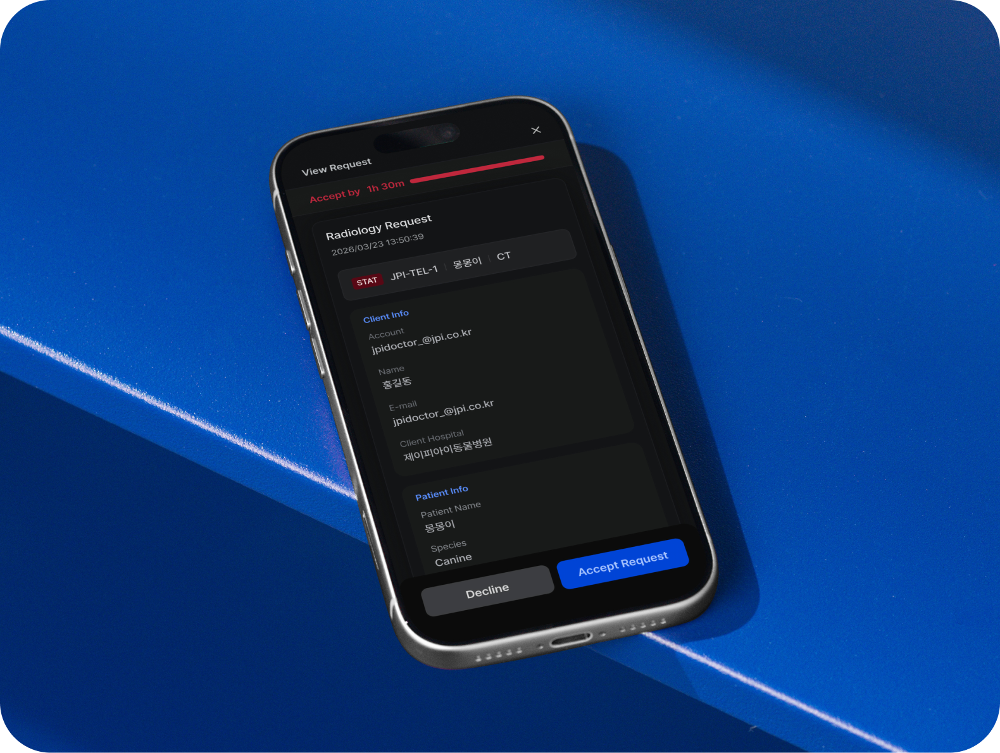
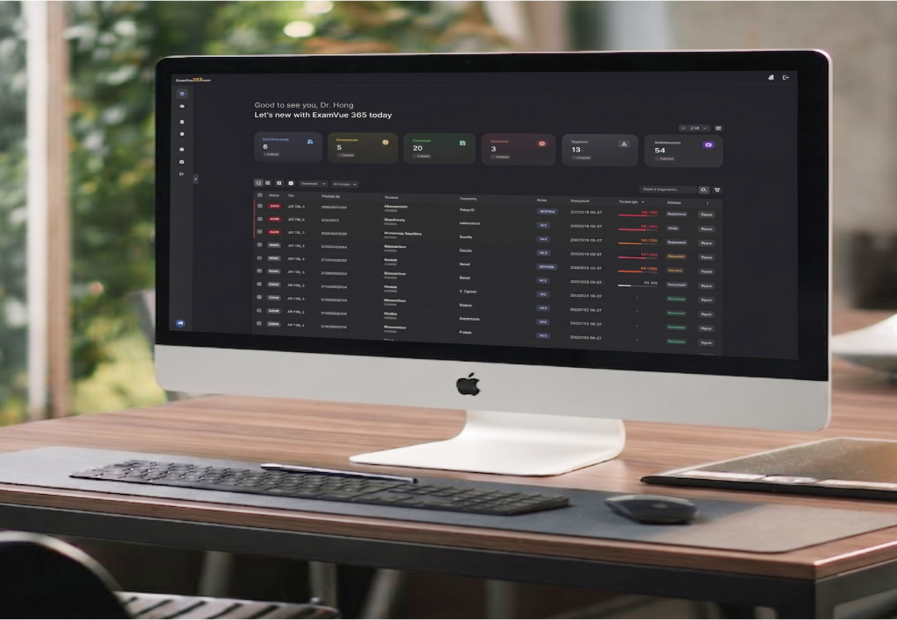
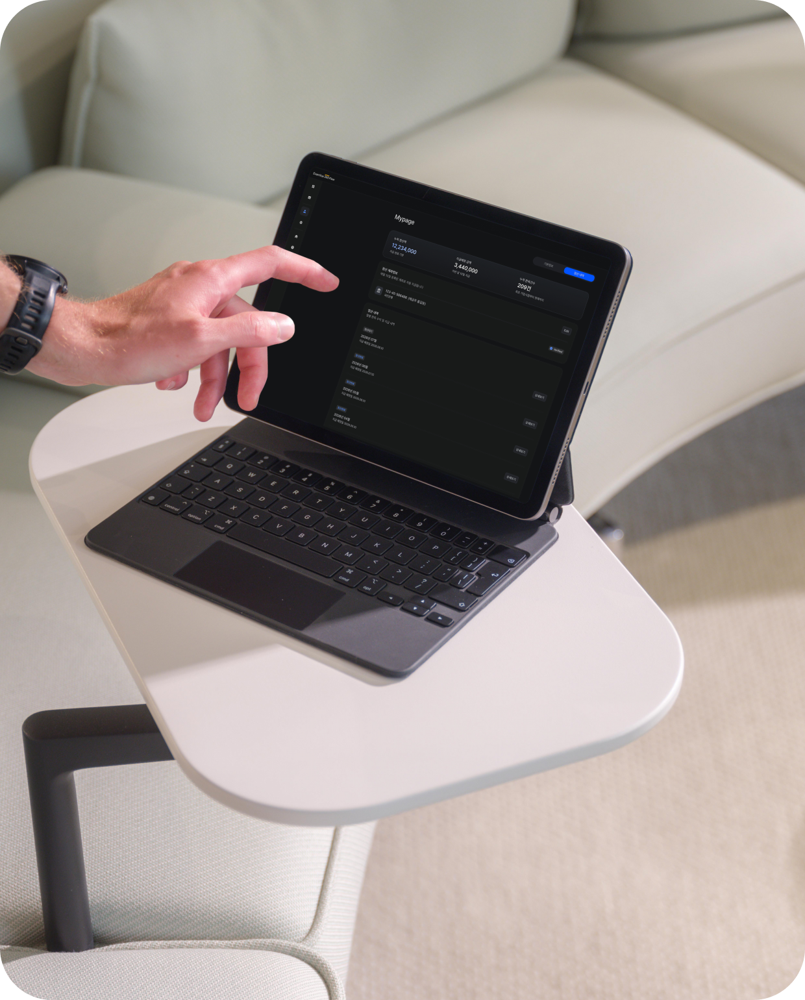

EXAMVUE 365 FLOW
TELEMEDICINE SERVICE
TELEMEDICINE SERVICE
판독이 어려운 영상,
전문 영상의학 수의사에게
바로 맡기세요
판독이 어려운 영상,
전문 영상의학 수의사에게 바로 맡기세요
영상을 올리고 의뢰서만 보내면, 검증된 영상의학 수의사가 판독해 드려요.
의뢰부터 결과 확인까지 한곳에서 끝나요.

SYSTEM OVERVIEW
촬영은 병원에서, 판독은
영상의학 전문 수의사에게.
촬영은 병원에서, 판독은
영상의학 전문 수의사에게.
필요할 때 언제든 전문가에게 맡기고,
진료의 다음 단계를 함께 만들어요.
필요할 때 언제든 전문가에게 맡기고,
진료의 다음 단계를 함께 만들어요.
병원에서 의뢰하면 검증된 전문가가 영상을 꼼꼼히 확인하고,
믿을 수 있는 판독 결과로 답해 드려요.
이런 병원에 추천해요
01
영상의학 전문 인력을
상시 채용하기 어려운 병원
영상의학 전문 인력을
상시 채용하기 어려운 병원
필요할 때만 이용하니까,
인력 부담 없이 판독을 맡길 수 있어요.
02
판독 의뢰와 결과를 체계적으로
관리하고 싶은 병원
판독 의뢰와 결과를 체계적으로
관리하고 싶은 병원
의뢰 접수부터 진행 상태와 결과 확인까지
한곳에서 관리할 수 있어요.
03
긴급하거나 복잡한 검사에
추가 의견이 필요한 병원
긴급하거나 복잡한 검사에
추가 의견이 필요한 병원
판단이 애매한 영상도
전문가의 의견으로 확신을 더하세요.
EXAMVUE 365 FLOW / BENEFITS
더 빠르고, 더 간편하게.
판독이 쉬워지는 네 가지 이유.
전문 판독은 더 가까이,
번거로운 일은 더 적게.
01 / EXPEDITED REVIEW
48h
급한 의뢰는 더 빠르게.
최대 48시간 이내에
진단 결과를 받아보세요.

02 / AI ASSISTANCE
AI
의뢰서는 AI가 채워 드려요.
AI가 내용을 다듬어 주니까
작성 시간이 확 줄어요.

03 / MULTI-MODALITY
Modality
X-ray부터 MRI까지, 한곳에서.
X-ray · CT · MRI · 초음파 등
주요 DICOM 영상을 모두 받아요.

04 / INFORMATION SECURITY
Encrypted
전송부터 저장까지 안전하게.
환자 정보는 보내고 저장하는
모든 과정에서 암호화돼요.
ANYWHERE, ANY DEVICE
진료실에서도, 이동 중에도
휴대폰 · 태블릿 · PC로
의뢰하고 바로 확인하세요.
진료실에서도, 이동 중에도
휴대폰 · 태블릿 · PC로
의뢰하고 바로 확인하세요.
따로 설치할 필요 없이 웹으로 접속하면 돼요.
휴대폰, 태블릿, PC 어떤 화면에서도 보기 편하게 맞춰 보여 드려요.



SERVICE FLOW / 01—04
영상에서,
진료의 확신으로.
의뢰 접수부터 전문 판독, 결과 알림까지.
진료의 흐름을 끊지 않는 네 단계.
EXPERT
INTERPRETATION
더 깊게 읽고,
더 명확하게 전해요.
EXAMVUE 365 FLOW ↗
01
의뢰서 접수
영상을 올리고
의뢰서를 작성하면 끝이에요.
02
전문 수의사 배정
의뢰 내용을 확인한 뒤
알맞은 영상의학 전문 수의사를 배정해요.
03
전문 영상 판독
영상을 꼼꼼히 살펴보고
종합 진단 보고서를 작성해요.
04
결과 전달
판독이 끝나면 이메일 · 문자 ·
카카오톡 · 왓츠앱으로 바로 알려 드려요.
WEB PACS VIEWER INCLUDED
원격 판독에는,
웹 PACS 뷰어가 기본으로.
의뢰한 영상은 기본 제공되는 ExamVue 365 Flow
웹 PACS 뷰어에서 바로 열어 볼 수 있어요.
웹 PACS 자세히 보기
→
01
브라우저에서 바로 열기
설치 없이, 의뢰한 영상을 웹 뷰어로 확인해요.
02
익숙한 뷰어 도구 그대로
확대, 밝기 · 대비 조절, 측정까지 판독실처럼 써요.
03
병원 PACS로도 확장
원격 판독 외 업무에도 쓰려면 별도 요금으로 이용할 수 있어요.
PRICING
판독한 만큼만, 투명하게.
첫 이미지(부위) 요금에, 추가되는 만큼만 더해져요.
CR
Computed Radiography
₩15,000
/ 이미지당
추가 이미지 ₩15,000
CT
Computed Tomography
₩150,000
/ 부위당
추가 부위 ₩150,000
MR
Magnetic Resonance
₩165,000
/ 첫 부위
추가 부위 ₩90,000
결제
판독 신청 시점에 건당 결제됩니다.
결제 수단: 카드 또는 간편결제 (Toss 제공).
취소 · 환불
판독이 시작되기 전까지 무료로 취소하고 전액 환불받을 수 있습니다.
판독이 시작된 이후에는 관리자에게 문의해 주세요.
FAQ
궁금한 점이 있으신가요?
판독 결과는 얼마나 걸리나요?

급한 의뢰는 최대 48시간 안에 결과를 받아 보실 수 있어요. 판독이 끝나면 이메일 · 문자 · 카카오톡 · 왓츠앱으로 바로 알려 드려요.
어떤 영상을 의뢰할 수 있나요?
X-ray, CT, MRI, 초음파 등 주요 DICOM 영상을 의뢰할 수 있어요. 영상을 올리고 의뢰서를 작성하면 접수가 끝나요.
판독은 누가 하나요?
검증된 영상의학 전문 수의사가 판독해요. 의뢰 내용을 확인한 뒤 검사에 맞는 판독의를 배정해 드려요.
요금은 어떻게 되나요?
요금은 검사 종류와 이미지(부위) 수량, 신청 조건에 따라 계산되며 판독 신청 시 건별로 결제됩니다. 자세한 금액은 위 요금 안내에서 확인하실 수 있어요.
병원에 PACS가 없어도 쓸 수 있나요?
네, 영상을 직접 올려서 의뢰하시면 돼요. 의뢰한 영상은 기본 제공되는 웹 PACS 뷰어에서 바로 열어 볼 수 있어요.
따로 설치해야 하는 프로그램이 있나요?
아니요, 웹으로 접속하면 바로 쓸 수 있어요. 휴대폰, 태블릿, PC 어디서든 의뢰하고 결과를 확인하세요.
Trust Built on Globally Recognized Technology
더 빠르고 정확한 판독, 지금 시작해 보세요.
도입 문의하기
↗